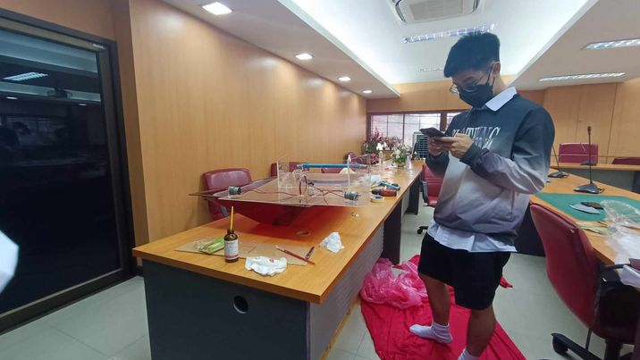

วันนี้ผมตื่น 5.00 A.M. อาบน้ำ กินข้าวแล้วก็ไปรร. ถึงรร.ประมาณ 6.10 A.M. จัดกาแฟไปแก้วนึงแล้วก็อ่านเคมีต่อ
จากนั้นก็สอบ ด้วยพลังbuffของเคมีที่อ่านตอนกลางคืนเมื่อวาน ทำให้ผมทำข้อสอบได้
สอบเคมีเสร็จเหลือเวลาแค่ 10 นาทีในการอ่านGrammar สอบGrammarเสร็จก็ชิวเพราะไม่มีสอบแล้ว เหลือแค่นอกตาราง
เวลาที่เหลือก็ไปช่วยงานProjectเพื่อน
แล้วก็กลับบ้าน ทำธุระส่วนตัว นอนหลับอย่างฝันดีแลัวปล่อยให้ตัวผมในอนาคตจัดการในวันพน.